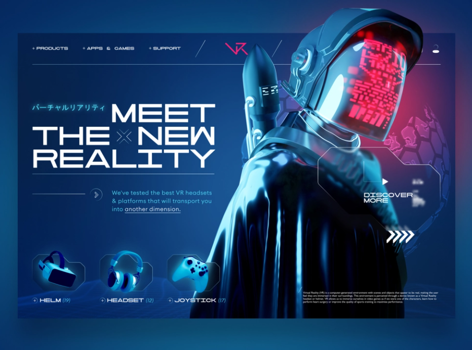
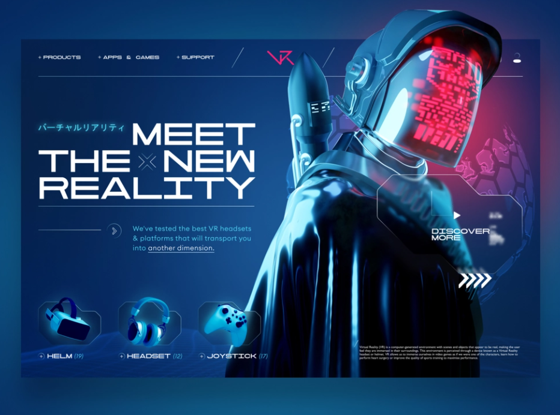

Keep a Record
Case Study
"La musique avant tout !"
Pr◉jet
Keep a Record est un travail de fin d'année issu d’enquêtes menées de manière consciencieuse ainsi que plusieurs recherches qui repose sur le prototype. L’objectif de Keep a Record est de trouver de manière rapide un événement musical d'un artiste que l'on aime bien. Ou alors d'activer la notification pour pouvoir connaître les prochaines tournées.
Un projet digne d'un Travail de Fin d'Année doit forcément être quelque chose qui nous parle, qu'on aimerait partager. Pour ma part j’étais parti sur l’univers de la musique. J’étais inquiète quant au fait qu’il y ait des vols de sacs, de bien personnels lors de l'événementiel. J’ai proposé une vente de produit sécurisés comme des sacs, des sacs à bananes, des bandoulières. Mais ce projet ne démarquait pas tant que ça, le produit existait déjà, je n’avais qu’à faire un site qui les regroupes et de toute manière rien n’est sécurisé à 100%. Je me voyais pas mentir à mes utilisateurs, à mes futurs clients. C'est là que mon premier pivot intervient.
Mon premier pivot s'est donc fait, c'est en parlant à des gens intéressés par le monde du festival/concert que je me suis dis qu'au fond, ce que je voulais retenir dans ce projet c'est que l'on ne veut pas manquer la venue d'un de nos chanteurs ou groupes préférés en Belgique !
Pr◉blèmatique
Avant de répondre, ma discussion a fait l'objet d'une enquête sociale avec les personnes qui était concernés de près ou loin par le monde de l'événementiel. J'ai pu définir l'ensemble des personnes comme des gens qui se retiennent de s'exprimer à travers leur divertissement.
En effet, les gens interviewvé allaient beaucoup à Forest National, pour voir un concert entre amis et n'hésitais pas à se déplacer à Sport Paleis à Anvers pour voir Dimitri Vegas & Like Mike, encore aujourd'hui, des personnes que je cotoie durant mon job étudiant me disent s'ils y sont : Oui. Alors il ira parce qu'"il ne peut pas manquer ça".
Rais◉nnement
Il n'y a pas besoin que je vous dise qu'une étude de l'ordre de la psychologie nous ont démontrer que le manque de divertissement ou la frustration d'avoir regretter un moment pourrait avoir des repercussions négative dans le bien-être de l'humain. Et comme vous le savez sans doute aussi, ça ne sonne pas comme nouveau le fait que je vous dise qu'un chercheur en neuroscience cognitives de l’Université de Groningen au Pays-Bas, le Docteur Jacob Jolij, a même réussi à mettre au point une équation déterminant les critères qui font d’une chanson un titre « feel good » C'est à dire que l'on se sent joyeux. Il a ainsi conclu que pour produire du bonheur, une musique devait avoir un tempo de 150 battements par minutes, des paroles positives, et des notes en gamme majeure (notion un peu compliquée à développer ici, à moins de se lancer dans un cours théorique de solfège qui vous barberait en 2 minutes chrono). Mais toujours est-il que cette équation a permis d’effectuer un classement des titres les plus populaires supposés donner un sentiment de joie. On y trouve, entre autres, « Don’t stop me now » de Queen, « Good vibrations » des Beach Boys ou encore le fameux « Happy » de Pharrell Williams, au top du « Feel Good Index » du Docteur Jolij, chose que le succès et l’engouement mondial pour ce titre ne fait que confirmer.
Il n'y as pas que les humeurs joyeuse que l'ont peut ressentir en écoutant de la musique. Elles permettent de nous sentir puissant comme si on soulevait 50kg d'haltère à la salle avec la chanson "Eye of the tiger - Survivor", de faire ressentir notre tristesse avec du " Miserere Mei - Georgio Allegri ", de montrer que l'on est en colère avec pourquoi pas du Ac/Dc !
Bon, trève de bavardage, je vous montre çi-dessous le pourcentage de personnes intéressés par l'application en question.

C◉ntenu
La veille
Faire de la veille va me permettre de pouvoir démarrer mon application sur des bases solide pour ensuite s'en servir dans la prise de décision. Pour ce qui concerne les notes, le calendrier je me suis documenter sur le site Dribbble.
MVP
MVP (Minimum Viable Product)
On a l'idée du projet, il est temps de tester la viabilité de mon projet via un MVP (Minimum Viable Product) c’est-à-dire à l’aide d’un travail simple et rapide de mon application, qui ne contient presque aucun design.
On aperçoit d'après les tests utilisateurs qu'il fallait analyser le niveau d'ergonomie. Les logo n'étaient pas de la même famille non plus. Le bouton retour ne convenait pas à l'usage des utilisateurs qui devaient appuyer plusieurs fois dessus. La nouvelle version propose un moyen plus simple d'accéder aux différentes navigation et le bouton retour est plus spacieux.
◉bjectifs
-
Se tenir au courrant des événements musicaux.
-
L'application doit être simple à utiliser.
-
Intuitif.
Le l◉g◉
Le logo part de l'idée que l'on enregistre notre passage comme lorsque l'un objet touche l'eau et provoque une ondulation. Le cercle rouge est tout simplement la représentation graphique de l'enregistrement et de ce fait nous pouvons garder une information pour s'y référer plus tard.
Inspirati◉n
On ne part jamais de rien, j'ai été bluffer par l'effet du Glassmorphism et du Neuromorphism
 

N◉m
Le nom doit être accrocheur, facile à retenir et qui doit parfaitement s'identifier au produit.

C◉uleur
La couleur est rouge car elle symbolise bien l'audace et l'energie que porte le projet Keep a Record. Quand on s'interesse a la signification des couleurs et que l'on tombe sur le rouge, on constate que ça apporte beaucoup d'attention, l'oeil l'identifie complètement. Et les sous-tons rouge atténue l'aggressivité que peut porter cette couleur. L'utilisation de la nuance blanche, laisse à l'utilisateur une sensation de légereté de pureté.
Typ◉graphie.
Prôner la clarté et la lisibilité
C’est sur base d’analyse complète que j’ai choisis ma typographie. Il fallait qu’elle soit claire et lisible, que les lettres ne se confondent pas entre-elles:
Il y a accessibility.digital.gov qui est un site intéressant qui regroupe les éléments à considérer pour choisir sa typographie.
-
Il fonctionne bien quand il est petit ou grand.
-
Il a une grande hauteur d'x.
-
Le caractère est grand pour sa taille en points.
-
Les métriques (telles que la hauteur x) sont cohérentes entre les formes de lettres.
-
Les formes de lettres individuelles ont une forme distincte et ne peuvent pas être confondues avec d'autres. Par exemple : I, l et 1 sont distincts. 0 et O sont distincts.
-
La police de caractères prend en charge tous les caractères et styles de police nécessaires.
Test utilisateur
Keep a Record c'est dans nos cordes !
Et ensuite on partage le fruit de notre travail. Comme si une partie de nous même allait être jugée sévèrement, alors que pas du tout. Au contraire ! Le 1er test utilisateurs s'est bien passé dans l'ensemble. Il a rencontrer quelques soucis mais ce dernier était très content d'avoir fait le test. Je me tate de réparer les éléments problématiques de celui-ci et rendre l’expérience utilisateur la plus agréable possible et renforcer l’accessibilité du service que je proposais. L'ensemble des tests se sont bien passé ! Les retours étaient positif, et les utilisateurs parvenaient toujours à compléter la tâche demandée sans trop d’efforts. Malgré tout, quelques points à changer ou à ajouter sont ressortis. Tel que:
-
les bords ne sont pas tous arrondis de la même manière
-
"Le cadenas rouge n'est pas nécessaire à mon avis. Ça alourdit un peu. Et les zones d'Imput de texte avec les ombrages colorés sont sympa mais alourdissent un peu l'ensemble je trouve. C'est dommage pour du glass-morphism. En tout cas l'ensemble est bien plus attrayant et plus agréable à l'Oeil que la maquette précédente."
Le bilan
L’utilisation d’un workflow, m’a permis de prendre plus de temps sur la partie développement, et d’effectuer des modifications à mon design assez facilement. Enfin, je pense avoir retiré pas mal d’enseignements au niveau de l’expérience utilisateur, en la plaçant au centre de la conception de mon projet. J'ai pris un malin plaisir de la veille pour être à jour sur les nouveautés que ça soit en terme de design et de code.
Vu le travail accompli pour ce TFA, je sais que toutes les notions découvertes ou appronfondies pendant ces dernières semaines me seront utiles pour l'avenir, que ça soit pour gagner du temps ou économiser mon énergie. Je suis contente d'en apprendre tout les jours dans la section Web et Transmedia.